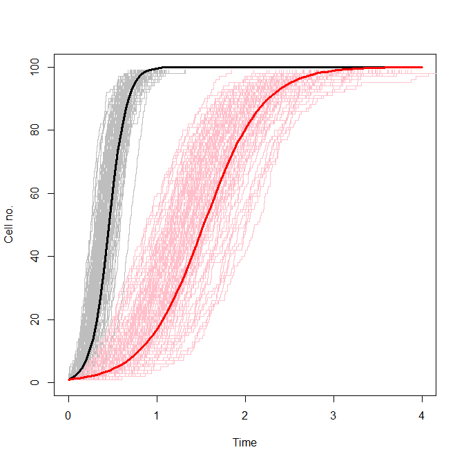

A discrete, stochastic, logistic population model
In this article, I will present a simple, discrete, stochastic version of the logistic population model and a convenient function for carrying out dynamic simulations from this model. The discrete, stochastic version of the logistic model is relevant for any growth process initialised with small populations. For example, in biology, the analysis of growth curves for clonal cell cultures derived from single cells is attractive for several technical reasons, but growth curves are likely to be very difficult to interpret with a continuous, deterministic modelling framework. This is because during the first several population doublings, the system is discrete (low integer numbers of cells) and unmodelled environmental variability and cell-to-cell heterogeneity are likely to cause strongly stochastic effects on cell division.
Introduction to the logistic model
The logistic model of population dynamics was proposed by Verhulst in 1838 as an improvement to the Malthusian exponential model for describing population growth. The logistic model is a very simple mechanistic model that can be applied to a wide range of population types, including ecological populations or human demographics, but I am mostly interested in using the logistic model to describe the growth of clonal cell populations growing in vitro.
The continuous, deterministic, exponential growth model of a population, or culture (of size $N$) of dividing cells with an intrinsic growth rate $r$ can be written as an ordinary differential equation:
$\frac{dN}{dt} = r N$If we assume that the culture was inoculated with $N_0$ cells (the initial condition for the population size), we can easily solve the above ODE to give an analytical solution for the dynamics of population size according to the exponential model:
$N(t)=N_0 e^{r t}$There are several strong assumptions embedded in this model:
- Growth is never inhibited by any density effects (i.e. the population never runs out of space or resources). This assumption is only valid during the early stages of population growth.
- Population size is continuous (i.e. a real number, rather than an integer). This assumption is approximately correct for large populations.
- All members of the population have the same growth rate. For heterogeneous, biological populations, growth rates are likely to vary slightly within populations (e.g. from cell to cell).
- Growth rate is constant with time. Even if environmental conditions (on which expected growth rates depend), like temperature for example, are kept constant, actual rates of division may fluctuate with time. However, for a sufficiently large population, average growth rate will describe population-level dynamics well.
The continuous, deterministic logistic model eliminates the need to make the first assumption above by incorporating density-dependent growth inhibition. It introduces a new concept: population carrying capacity, described by a new model parameter $K$. Carrying capacity is the maximum population size that can be supported (given, say, environmental nutrient constraints, or space constraints). We can think of the logistic model ODE (below) as being the same as the exponential model ODE, but with growth rate multiplied by an inhibition term. The value of the inhibition term is approximately 1 when the population is "small" (e.g. when $N << K$), but as $N$ approaches $K$, the inhibition term (and therefore the population growth rate) approaches zero asymptotically. Population size $N$ approaches carrying capacity $K$ asymptotically as $N = K$ is a stable, attractive fixed point for the system.
$\frac{dN}{dt} = r N\left ( 1-\frac{N}{K} \right )$The logistic model ODE has an analytical solution. Solving this simple ODE is a good exercise in integration by parts.
$N(t) = \frac{K N_0 e^{rt}}{K + N_0 \left( e^{rt} - 1\right)}$An algorithm for discrete, stochastic simulation
In this section $N$ will be an integer, representing number of cells. To carry out discrete event simulation of the logistic model, we need to be able to write down the hazard function for the probability that a cell divides in an infinitesimally small window of time about time $t$. The hazard is constant between divisions and modelling it will allow us to estimate the time between cell divisions. We will update cell number by simulating the time between cell divisions, incrementing the population size by one at each division and continuing until a termination condition is met. In this case, we will terminate simulation when the population reaches its carrying capacity.
Gillespie (1977) shows us how to use a wide range of hazard functions derived from zeroth, first or second order rate expressions for reactions in a chemical network. It is possible to derive the logistic equation assuming cells consume nutrients by mass action reaction kinetics (I'll write another post about this soon), and this makes it more clear why the carrying capacity $K$ should be included in the hazard function. For now, let us accept that the RHS of the logistic model ODE above is an appropriate hazard function for discrete stochastic simulation, describing the dependance of the probability of a cell division occuring on the number of cells in the population and on the model parameters.
$h(N,r,K) = r N\left ( 1-\frac{N}{K} \right )$Starting at $t = 0$ and given an initial population size (the number of cells in the culture inoculum $N(0) = N_0$) we can simulate the time to the next cell division, given the above hazard function, by sampling from an exponential distribution:
$\delta t \sim{ Exp(h(N,r,K))}$Then we can update the simulated time and population size computationally:
$t = t + \delta t\\ N = N + 1$We repeat these two steps until the population has reached its carrying capacity, i.e. while $N < K$. Ensembles of simulated realisations from this model are shown in the plot below.
Logistic model simulations 100 discrete stochastic simulations from the logisitic model of growth from an inoculum of one cell ($N_0 = 1$) to a carrying capacity of 100 cells ($K = 100$) for a slow growing strain (pink, $r = 3$) and a fast-growing strain (grey, $r = 10$). Deterministic simulations using the same parameter values are overlaid in red and black respectively.
There is one feature unique to the logistic model that allows us to carry out relatively efficient simulation: we can calculate the total number of events (e.g. cell divisions) which will occur a priori ($K-N_0$). This allows us to generate all the random numbers required for stochastic simulation at once, which in turn allows vectorised calls to random number generators. Generating random numbers with vectorised calls is useful for carrying out simulations in high-level programming languages such as R or Python where vectorised operations are many times faster than equivalent for loops. The R function below is quite fast, simulating a cell population with a carrying capacity of 1.6 million cells (corresponding to a realistic pinned yeast culture growing on CSM solid agar for example) in about half a second.
simCells=function(K,r,N0){ # Unusually, for this model, we know the number of events a priori eventNo=K-N0 # So we can just generate all required random numbers (quickly) in one go unifs=runif(eventNo) # Every event produces one cell and consumes one unit of nutrients clist=(N0+1):K # Simulate time between events by generating # exponential random numbers using the inversion method dts=-log(1-unifs)/(r*clist*(1-clist/K)) return(data.frame(t=c(0,cumsum(dts)),c=c(N0,clist))) }
Created by Pretty R at inside-R.org
The code snippet above works by generating $K-N_0$ $U(0,1)$ random numbers and the list of cell numbers ($N$) present after each division event, using $N$, $r$ and $K$ to calculate the hazard of division for each value of $N$ and finally, using the inversion method to generate a sample from the exponential distribution with rate parameter equal to the hazard.
Conclusion
I'm particularly interested in applying this simple function to understanding population growth curves initiated from single cells. The plot above demonstrates the very wide range of different growth curves that this model produces for simulated cultures inoculated from a single cell. In particular, slow growing strains, whose probability of division is lower at a given time, are affected strongly by discrete stochastic effects during the first few divisions. This results in the much wider spread of pink curves than grey in the above figure. The plot above suggests that experimental observations of growth curves arising from cultures inoculated by single cells are likely to have a high degree of intrinsic stochasticity. Fitting a deterministic model to experimentally observed replicate growth curves is likely to give an artificially high estimate of the variability of the growth rate parameter $r$ in this case.
This function is also reasonably efficient and is unusual in that it is fully vectorised. This allows exploration of discrete stochastic logistic model simulations in high-level languages such as R and Python, allowing rapid prototyping of inference and simulation workflows for example.